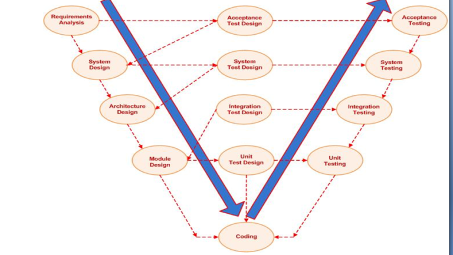

🧩 SDLC – Solution Development Life Cycle
Technický základ pre všetky metodiky, ktoré použÃvam v praxi aj vo výuke.
📌 1. O čom to je?
Zjednodušený pohľad na vývoj riešenia pomocou tzv. V-modelu
Inšpirované konceptom Testing-for-Testing
https://tfortesting.wordpress.com/2012/11/20/v-model-for-testing/

V-model zobrazuje zrkadlovú štruktúru vývoja:
- Vľavo: návrhové fázy (od požiadaviek až po návrh modulov)
- Vpravo: testovacie fázy (od jednotkového testovania po akceptáciu)
- Dno „V“: fáza implementácie (kódovanie)

Čo nie je otestované je nefunkčné
- Preto každý systémový výstup je nutné overiť, či spĺňa očakávania.
🔠2. Prečo to je?
Aby sme sa na ceste (a často vo viacerých paralelných cestách) nestratili.
SDLC a jeho vizualizácie nám pomáhajú:
- Vytvoriť pre každé riešenie jasne definovaný priestor
- Udržať štruktúru pri spracovanà veľkého množstva informáciÃ
- Pracovať paralelne na viacerých riešeniach bez chaosu
- Budovať konzistentne tÃmové aj individuálne riešenia
- Priebežne tvoriť znalostný systém
🧠3. A čo s tým?
Vytvoril som niekoľko metodÃk na podporu rutinných aktivÃt počas SDLC, aby sa vytvoril vúÄÅ¡Ã priestor priestor pre kreativitu a vnÃmanie rôznych kontextov
Jedná sa o nasledovné metodiky:
- Context Aware Approach
- Context Aware Systems
- Context Aware Solutions
- 7 Disciplines for Successful Solution
- SDLC - Keep overview over SDLC of your solution
- APV - Assets-Perspectives-Views - Keep order over Your assets
- Q12 - Twelve quadrants for starting Your business successfully
- Lean Canvas - Nine topics describing ypur new business
Tieto metodiky som implementoval do:
- Modelovacieho nástroja Enterprise Architect (Sparxsystems technologies)
- Github repository templates
Použi tieto modely ako:
- 🧠Orientáciu v komplexných projektoch
- ğŸ› ï¸ Nástroj vo výuke študentov alebo školenà kolegov
- 📠Rámec pre vlastné kurzy, dokumentáciu alebo konzultácie
🔠4. Kontext roly a výstupov – Solution Lifecycle Management

Tento model zobrazuje:
- ZákaznÃk ↔ Riešenie ↔ TÃm: trojica, v ktorej sa pohybuje každé riešenie
- Každý blok: fázu, rolu, zodpovednosti, výstupy
- Význam pre:
- 📄 Šablóny a dokumentáciu
- 👨‍🏫 Výučbu a metodiku
- 🤠TÃmovú koordináciu a konzistentné doručovanie
👉 Späť k prÃbehu: journey.md